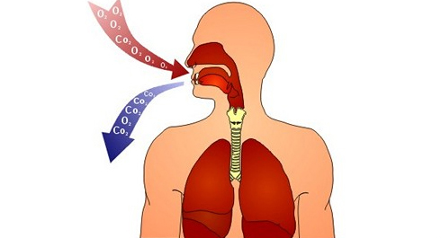

Any meal consists of the following main components:
- Organic substances (proteins, fats, carbohydrates, vitamins).
- Inorganic substances (mineral and other chemical substances, microelements, water).
Functions of food
1. Plastic (structural) function - providing the body with building material for creation and renewal of cells and tissues. For this purpose, proteins are primarily used, but also fats and, to a lesser extent, carbohydrates.
2. Bioregulatory function - participation in the formation of enzymes and hormones, which regulates the work of our organism. Here proteins play the crucial part again, vitamins and fats are also involved.
3. Energetic function – supplying the organism with energy. Mainly, carbohydrates and fats serve for realization of this function, but in some urgent situations proteins are used.
Today we’re starting the block of infoposts, where we’ll review the core trio of nutritious elements: proteins , fats and carbohydrates.
Proteins

Protein ( from greek “protos” – the first) – the basic constituent that makes up our body. About 85% of any living organism tissues, including human body, are made up of protein.
5 important functions of proteins
1. Serve as a building material for tissues.
2. Transport vitamins, hormones, fatty acids and other elements throughout the body.
3. Ensure the normal functioning of the immune system.
4. Support the work of the "unit of heredity".
5. They are accelerators of all biochemical metabolic reactions of the organism.
With a lack of energy, proteins can act as a raw material for its production. The oxidation of 1gr of protein gives 4.1 kcal of energy, but to use them for this purpose – it's like to kindle a fire with 100-dollar banknotes.
To build new cells to replace the destroyed ones, people constantly need proteins. Besides protein is the only source of nitrogen, without which the body cannot synthesize other proteins.
An important detail!
Proteins consist of 20 amino acids. Eight of them are irreplaceable. This means that the body cannot synthesize them on its own and must receive them from food.
The biological value of any food proteins is determined by two main characteristics: the number of essential amino acids and digestibility. Proteins of the animal origin are valued more(eggs, meat, fish, dairy products), plant origin proteins have a less value (nuts, legumes, flour, vegetables and fruit). However, in order to get all the essential amino acids and to provide all the body with them one has to consume various protein products.
Lack of proteins in diet leads to the cleavage of proteins in tissues, when your own proteins and nitrogen are used for acute needs. The following analogy may be made. Imagine that you are building a house and suuddenly you ran out of bricks. But you need to finish the work anyway, so you decide to take the bricks from the already constructed walls for the erection of a new one. When this situation happens to our body, the activity of the nervous system is disrupted, there is a hormonal imbalanceand muscle breakdown, the body weight is reduced, fat deposited in the internal organs, – so, the body puts patches from the tree instead of destroyed bricks.
Excessive protein intake is another extreme. Overloading them, it involves trouble to liver and kidneys, which are involved in the neutralization and disposal of protein degradation products (in the process of synthesis of other proteins). Besides, the risk of allergic reactions and the processes of rotting in the intestine (digestive disorder) increase.
Conclusion: it’s much better to distribute the consumption of protein products to your entire diet during the day, than to eat one large portion at once.
How much protein do the muscles need?
The Internet is full of conflicting information about the protein intake rates needed for those who want to gain muscle mass. Sometimes specify 2-3 or even all 5 g of protein per 1 kg of body weight per day. Do you really need so much protein to build muscle, or is it all the machinations of sports nutrition manufacturers?
Let's count together and go through the next points.
1. We know that the cells of our body renew constantly. So, proteins in muscles are completely renewed within 180 days. It turns out that our muscles will consist of new proteins entirely in 180 days.
2. The number of muscles in the body of the average man (not engaged in sports) is about 40% of the total weight of his body, in athletic body this figure can reach 50-60%, and in extreme cases (for example, bodybuilders) it can be over 70%.
3. 20% of muscles is protein and 80% is water. Thus, 100 g of muscle goes for only 20 grams of protein, but this amount is quite large.
4. Taking into account all the facts above, we proceed directly to the calculations.
Example:
- Total weight-100kg
- muscle % - 50%
- The renewal rate of the muscles - 180 days
The weight of the muscles (‘Total weight’ x ’% of muscle’) = 50 kg
Number of muscles, which is renewed in 1 day (‘Muscle weight’ / ‘Muscle renewal rate’) = 270 grams
Protein requirement (‘Number of muscles, which is renewed in 1 day’ x ‘% of protein in muscles’) = 54 grams
- muscle % - 50%
- The renewal rate of the muscles - 180 days
The weight of the muscles (‘Total weight’ x ’% of muscle’) = 50 kg
Number of muscles, which is renewed in 1 day (‘Muscle weight’ / ‘Muscle renewal rate’) = 270 grams
Protein requirement (‘Number of muscles, which is renewed in 1 day’ x ‘% of protein in muscles’) = 54 grams
Thus, a person weighing 100kg with 50% of the muscles in the body needs to get 54 grams of protein per day to maintain (!) normal functioning of the current number of muscles.
There are three important things to be said:
1. We talk about maintenance of normal functioning of the available muscular volume, so, in the meaning of usual activity. If a person starts to train actively, his protein needs increase, because the body needs to build new muscles.
2. These calculations take into account the need for protein only for muscles, although, as you already know, proteins are necessary for all tissues in the body without exception as a building material.
3. If your goal is to gain muscle mass and you want to know how much protein you need to add to your diet, then you need to calculate the protein requirement for the new weight and subtract the current protein requirement from it.
That seems to be the main things that you need to know about proteins at the moment. Well, tomorrow we will continue this topic and talk about FATS!